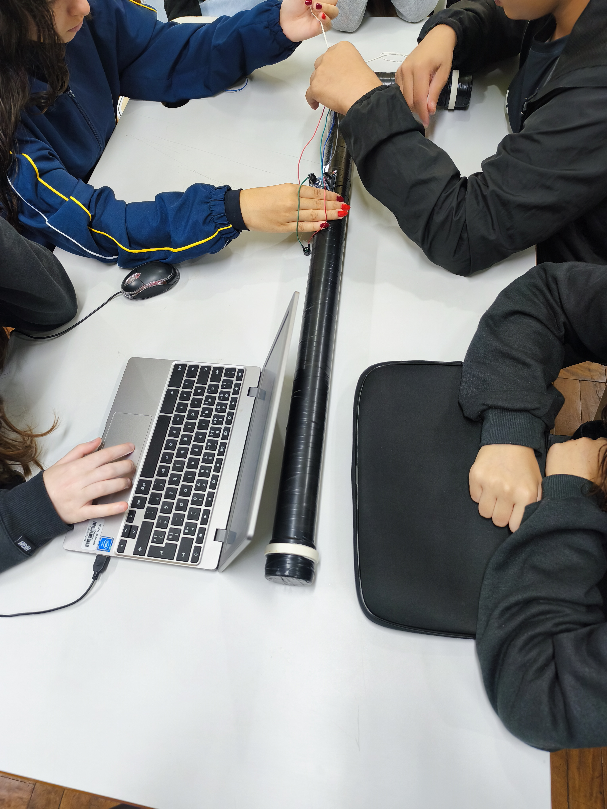
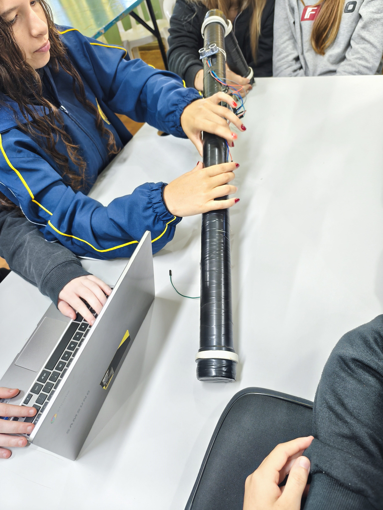

1. O Propósito do Projeto
Pessoas com deficiência visual enfrentam diariamente diversas barreiras para se locomover com segurança nos espaços urbanos. A bengala tradicional é fundamental para identificar obstáculos no solo, porém apresenta limitações para detectar ameaças suspensas.
Objetos como galhos de árvores, orelhões, placas informativas e caçambas representam riscos de colisão. Nosso projeto transforma o dispositivo convencional em um assistente ativo capaz de emitir alertas antecipados de proximidade sem substituir o uso tátil da bengala tradicional.
2. Apresentação do Protótipo (Fotos e Vídeos)
Confira a estrutura física desenvolvida, o posicionamento dos sensores e o teste de funcionamento em tempo real:

Demonstração prática: detecção de um obstáculo com emissão de alerta sonoro.
3. Arquitetura e Componentes da Tecnologia
A bengala baseia-se no princípio da ecolocalização. O sistema opera emitindo ondas imperceptíveis ao ouvido humano e calculando a distância pelo tempo de resposta da onda.
Sensor Ultrassônico
Mede distâncias enviando pulsos de alta frequência que rebatem nos objetos.
Microcontrolador
Processa a velocidade do sinal de eco e calcula a aproximação em milissegundos.
Buzzer Gradual
Emite alertas sonoros que intensificam o ritmo à medida que a distância diminui.
Motor Vibratório
Fornece feedback tátil diretamente na empunhadura da bengala.
4. Impacto Social e Benefícios
Autonomia Ampliada: Reduz a hesitação e a dependência durante o deslocamento.
Prevenção Eficiente: Antecipa perigos a até 1,5 metro de distância.
Custo Acessível: Montado com eletrônica aberta de baixo custo, viabilizando a inclusão em larga escala.
5. Autores e Créditos
Projeto desenvolvido pela equipe de tecnologia assistiva: